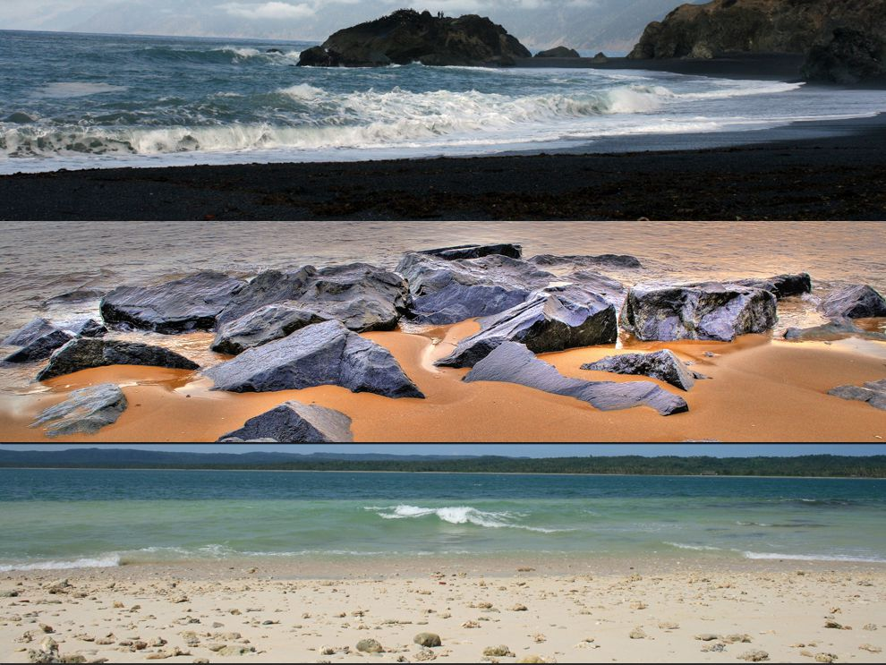

Deserts are areas that receive very little precipitation. People often use the adjectives “hot,” “dry,” and “empty” to describe deserts, but these words do not tell the whole story. Although some deserts are very hot, with daytime temperatures as high as 54°C (130°F), other deserts have cold winters or are cold year-round. And most deserts, far from being empty and lifeless, are home to a variety of plants, animals, and other organisms. People have adapted to life in the desert for thousands of years Read More...

Most beach materials are the products of weathering and erosion. Over many years, water and wind wear away at the land. The continual action of waves beating against a rocky cliff, for example, may cause some rocks to come loose. Huge boulders can be worn town to tiny grains of sand. Read More...

A mountain is a landform that rises high above its surroundings. Taller than a hill, it usually has steep slopes and a rounded or sharp peak. Mountains are rarely found alone. Groups of mountains are called ranges. Lines of ranges form mountain belts.Some mountains were formed by the activity of volcanoes. Scientists believe that most volcanic mountains are made up of rock that melted deep within Earth. The rock rose through Earth’s surface, or crust. Read More...
Essay on Forest: Forests are rightly called as the lungs of the earth. They are the most important part of our ecosystem and are pivotal in maintaining the balance in the food cycle and the natural equilibrium on the planet. Forests cover almost 31% of the surface of the earth. They are a habitat for not only wildlife and trees but also to some of the rarest of rare animals and plants on earth. Man has been using the resources of forests for thousands of years. As much as the forest has provided man with his livelihood, man has not given back to the forest as much as he should have. And this overuse, imbalance and greed of man have led to a disturbance in the natural cycle of the earth. Read More...
Global electricity consumption will account for more than 40% of the total energy demand by the year 2050, with some regions of the world expanding well beyond this level. At the same time, there is a growing urgency to adopt and reach zero carbon emissions to improve air quality and slow the effects of climate change. As the demand for energy grows, sustainable energy sources are needed to generate electricity that is powered by a sustainable power grid. Read More...